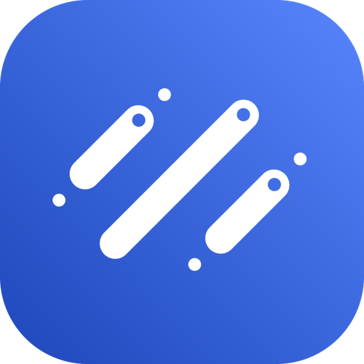
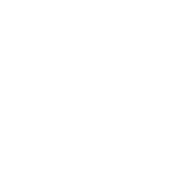

SONAC LAUNCHER에 오신 것을 환영합니다
이 PC에서 사용할 기능을 선택하세요.
어떤 용도로 사용할까요?
선택한 기능을 시작 화면에 표시합니다.
계정 연결
로그인이 완료되면 이 PC에서 로그인 상태를 유지합니다.

이 PC에서 사용할 기능을 선택하세요.
선택한 기능을 시작 화면에 표시합니다.
로그인이 완료되면 이 PC에서 로그인 상태를 유지합니다.
소낙 계정으로 로그인해 AI 채팅을 사용하세요.

영역을 만들고 동기화할 폴더를 추가하세요.
등록한 동기화 항목이 없습니다.
최신 커밋을 볼 프로젝트를 선택하세요.
| 이름 | 크기 | 수정일 |
|---|